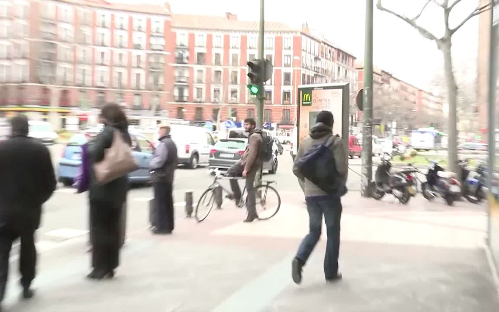
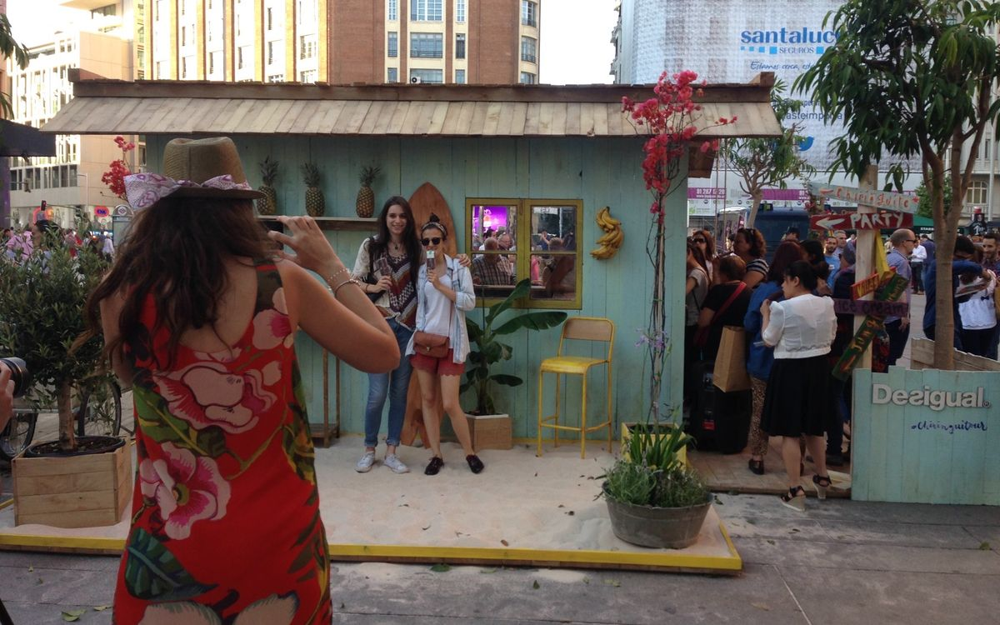

OOH, McDonald’s
Sonrisómetro
Paga el café con una sonrisa. Un mupi la medía y, cuanto más sonreías, antes se llenaba la taza.
+5.000 pruebas de producto
Innovación e IA. Medios, marketing y tecnología.

OOH, McDonald’s
Paga el café con una sonrisa. Un mupi la medía y, cuanto más sonreías, antes se llenaba la taza.
+5.000 pruebas de producto

VR, experiencial, Vodafone
Nos pidieron recrear la bajada de un puerto. Bicicletas intervenidas, sensores y vídeo esférico estabilizado para hacerla confortable. Al año siguiente, la segunda versión: subida, bajada y contrarreloj.
20 ciudades, 8.500 participantes

OOH, McDonald’s
Escápate al sitio más cool. Una marquesina en pleno calor de Madrid y Barcelona te recortaba, te llevaba a una playa e imprimía la foto con un cupón para un smoothie.
+3.500 foto-cupones

Experiencial, Desigual
Traer la playa a Madrid. Un chiringuito en medio de la ciudad, helado artesanal y concierto silencioso. Cien por cien de redención. Sí, eso existe. Después, Roma.
9.000 helados, 8.500 fotos

Experiencial, Huawei
Treinta móviles disparando a la vez para un efecto de tiempo congelado, convertido en una imagen para compartir.

VR, experiencial, AMC
Un rodaje en realidad virtual para vivir en primera persona el comienzo del apocalipsis zombi.
250.000 impactos, +1.000 participantes
1995
Para los ingenieros era un croma mejor. Para mí era otra cosa: una operación digital de sustitución.
1996
Los sitios de un canal de televisión, seis meses después de abrirse la internet comercial en Argentina. Cada gol con su vídeo y su peso a la vista. Casi nadie podía verlos con comodidad. Estaban ahí para cuando se pudiera.
Años 2000
Una campaña que solo aparecía cuando hacía más de 28 grados. Lápiz de Bronce.
Años 2000
Televisión interactiva: un botón de color en el mando abría un espacio de la marca dentro de la pantalla.
Ayuntamiento de Madrid
Metodología de evaluación para 21 distritos, más de 200 actividades y 23 paquetes de patrocinio.
Desde 2018
Primer editor por volumen de skills de Alexa en español, en España, México y EE. UU. hispano. La interfaz que no hace falta mirar.